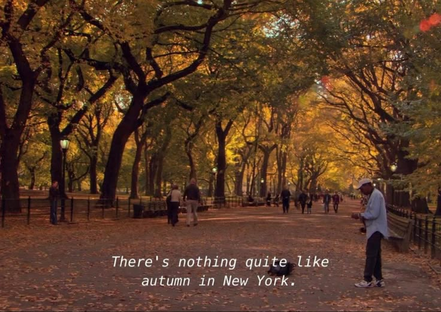
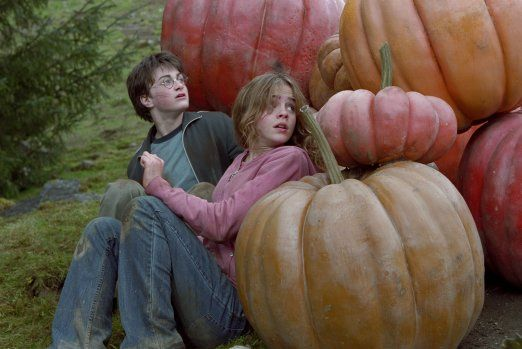

I'm so glad I live in a world where there are Octobers. -Anne of Green Gables
The season of leaves changing colors, the days getting darker, and colder this is fall/autumn. Also known as the more popular season, but how can we take advantage of this cozy season? Well here's a few of my ideas... grab a book and go to your favorite park, people watch, take in the bright colors, and soak in the warm sun. Make a cup of coffee or tea and watch classic autumnal movies (as listed below). Go out for brunch with your friends and walk around (breaksfast is the best food). Most importantly EXPLORE, WRITE, and ENJOY ART!!!

the perfect time for movies!

As the picture above displays, this is a perfect season to have a Harry Potter Marathon! As well as my personal favorite LOTR , trust me its a great time for an adventure. As well as cozy fantastical escapes, there are some good shows worth binging. Such as, the classic hit show f.r.i.e.n.d.s, and Gilmore Girls. If you're into animation, Over The Garden wall is the defintion of fall itself. If you aren't into tv, books are a great option. Cozy up near a window, or a fire place and escape into a novel. Currently I am enjoying, The Shadow of The Wind by Carlos Ruiz Zafon--- a wonderful mystery and adventure. What autumnal media will you be enjoying this season?